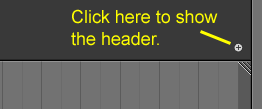

区块¶
每个编辑器都被细分为几个小区块。
主区块¶
有一个区块是始终可见的，这也就是所谓的主区块，它是编辑器最重要的部分。
每个编辑器都有特定的用途，所以每个编辑器的主区块和附加区域的功能都是不一样的。更多信息见 编辑器 章节中各编辑器对应文档。
标题栏¶
标题栏是位于区域顶部或底部以浅灰色为背景的水平长条。所有编辑器的标题栏都作为菜单和常用工具的容器。 菜单 和按钮随编辑器类型以及选中对象及其模式而变化。

3D视图编辑标题栏。
移动鼠标到某个区域，该区域标题栏会变化为较浅的灰色。这意味着该区域被 聚焦 ，按下的所有快捷键都作用于该编辑器的内容。使用 Alt-F9 可以隐藏标题栏。
工具栏¶
工具栏 默认位于左侧，包含工具设定。 T 切换显示/隐藏工具栏区块。
布局¶
滚动¶
区块可以拖动 MMB 垂直/水平滚动，如果该区块没有缩放级别，鼠标停留在上方即可使用 Wheel 滚动。
改变尺寸与隐藏¶
与 区域 一样，可以使用拖拽边界调整区块大小。
调小区块尺寸直至消失即可隐藏区块。隐藏后的区块显示为一个小加号(见下图)。在小加号上单击 LMB ，重新显示区块。
工具栏和属性区块可以使用指定的快捷键显示/隐藏。

|

|
位置¶
鼠标指针位于区块上方时，使用 F5 可以翻转区块位置至另一侧。
在标题栏 RMB 单击，从弹出菜单选择对应选项，可以翻转标题栏。如果标题栏位于顶部，该选项显示为 在底部显示 ，而标题栏位于底部时，该选项显示为 在顶部显示 。